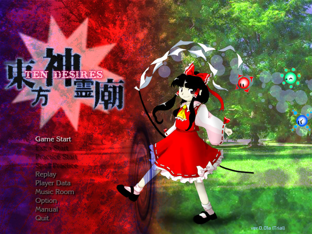

大地を凍らせた白黒の世界は終わり、幻想郷は本来の美しさを取 り戻そうとしている。 桜と共に神霊が舞う春であった。 現れては消え消えては現れる不思議な神霊は、無事に花見が出来 ないと感じさせるのに十分だった。 神霊とは一体何なのか、欲深い人間達の不思議な冒険が今始まる。 東方神霊廟 〜 Ten Desires. |

| 東方Project 第十三弾!! とうほうしんれいびょう 「東方神霊廟 〜 Ten Desires.」は、いつものゆるいキャラ達が、 弾幕となると突然切れ者になるシューティングゲームとなっています。 ＊このゲームには過激な弾幕シーンが含まれております 小さなお子様や、弾幕アレルギーの方はアレしてください。 |
・マニュアル
| ・ダウンロード（体験版、アップデートパッチ） | |
| 動作環境 | |
|---|---|
| 必須環境 | |
| ＯＳ | Windows XP/VISTA/7 DirectX ランタイム (June 2010) 以降の最新版がインストールされていること |
| ＣＰＵ | 十分な速度を持ったCPU(例 Intel Core iシリーズ等) |
| ビデオカード | DirectGraphic 対応の高速なビデオカード(推奨 VRAM 256M以上) |
| 推奨環境 | |
| サウンド | Direct Sound対応のサウンドカード |
| その他 | パッドコントローラ ある程度の弾幕免疫 欲深き魂（推奨） |